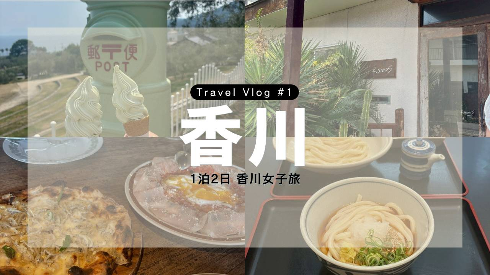
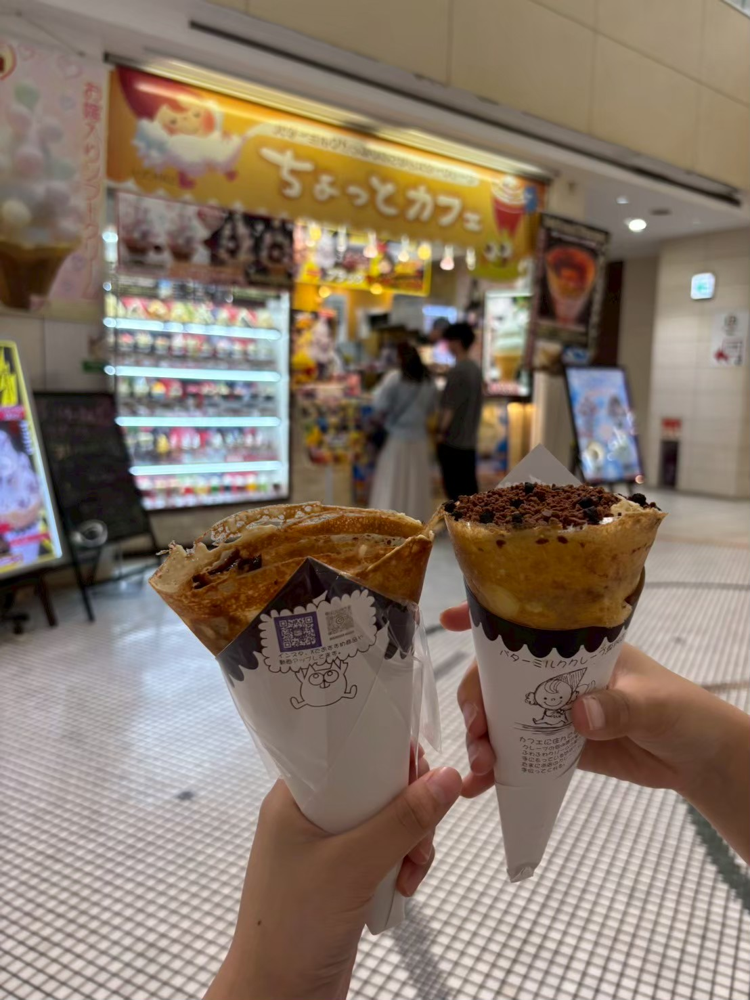
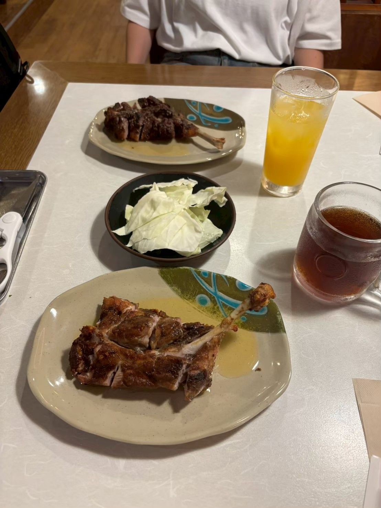
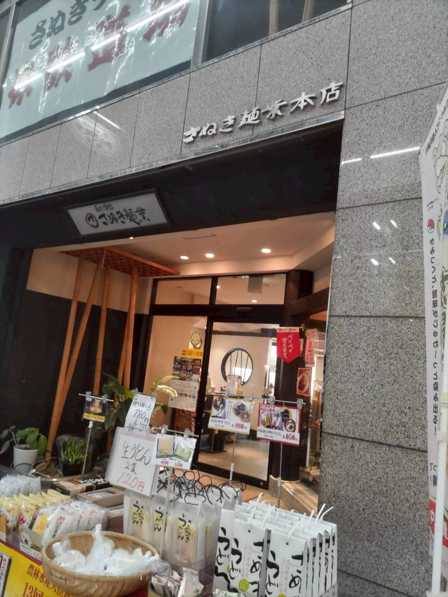
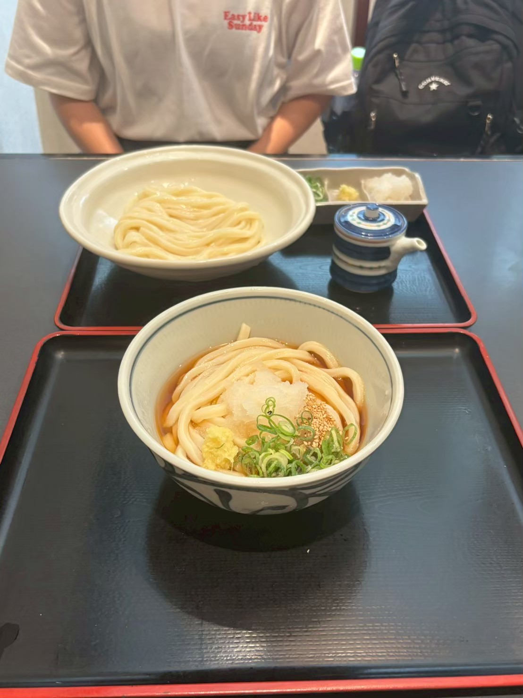
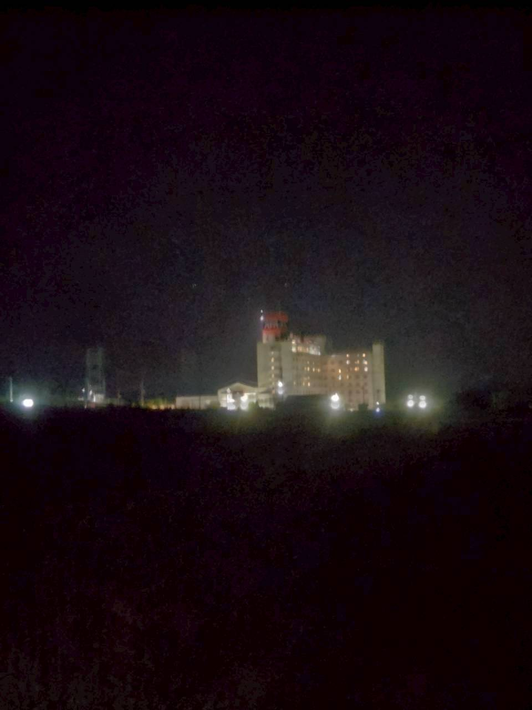
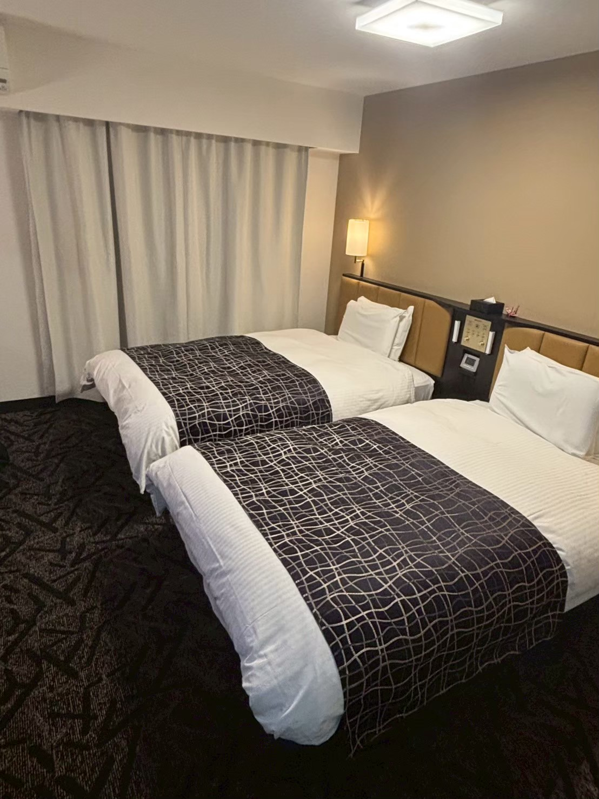

【香川女子旅】「ご当地グルメ&小豆島の旅」

Trip Info
Place 香川県
Date 2026.03.15〜16
Transport 飛行機・電車・バス
皆様はじめまして。ミナです。
自分のブログを立ち上げて、初めての記事になります。
この記事は、去年に親友と行った香川旅行の記録です。
親友と二人で香川県に行きました。
実は自分たちだけで飛行機の手続きをして搭乗するのは初めてでした！ドキドキした(笑)


↑高松駅が笑顔で可愛い。
小腹が空いたので、近くのクレープ屋さん？で一休み。
私はクランチクランチ(右)〈480円〉を購入。


若鶏&親鶏〈各1100円〉ドリンク〈350円〉を注文。
若鶏は柔らかくジューシー。親鶏は歯ごたえしっかりでうま味◎です。


まだまだお腹が空いている…。
ということで、目の前にあったうどん屋さんに入りました。
やっぱり香川に来たら、うどんを食べないと。
私は生じょうゆうどん(奥)〈550円〉を頼みました。
と、ここで問題発生。
本日泊まる予定のホテルまでの行き方をあまり調べておらず、
真っ暗闇の中を徒歩で向かうことに…。

こちらがやっとホテルが見えたときの写真です。
そこらの肝試しより怖かったです。
ただ、ホテルに向かう最中に、たまたま花火を見ることができました。
やっとの思いで到着です。
今回宿泊したのは、「アパホテル 高松空港」です。

とても清潔で良かったです。
違うフロアに大浴場もありました！
このあとは、明日の予定を少しだけ話し合った後、すぐに就寝しました。
香川旅行一日目の様子は以上です！
次回は二日目の様子をお届けします。
ここまでご覧いただきありがとうございます。
次回のブログも是非見てください♪
ではまた！